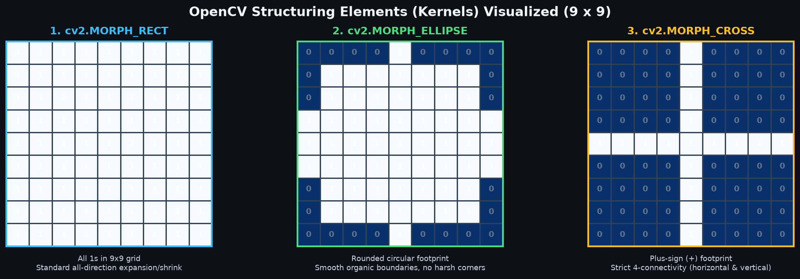
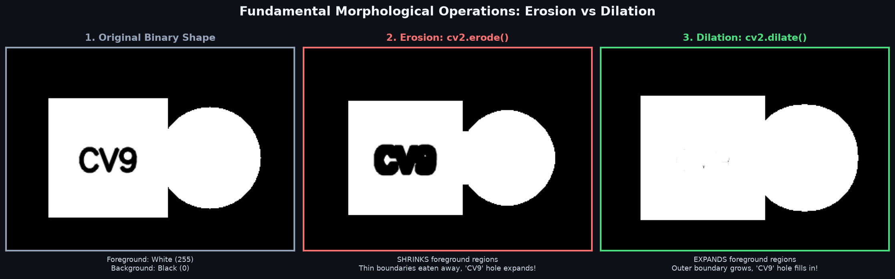
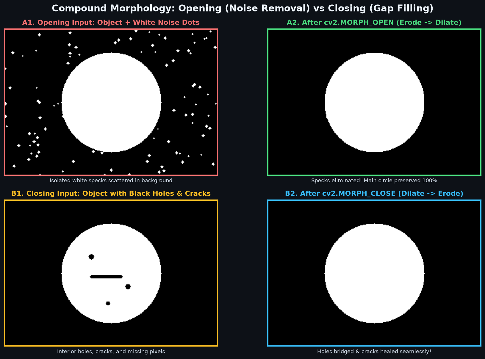
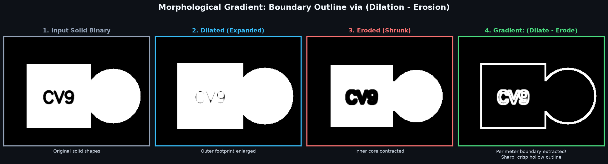
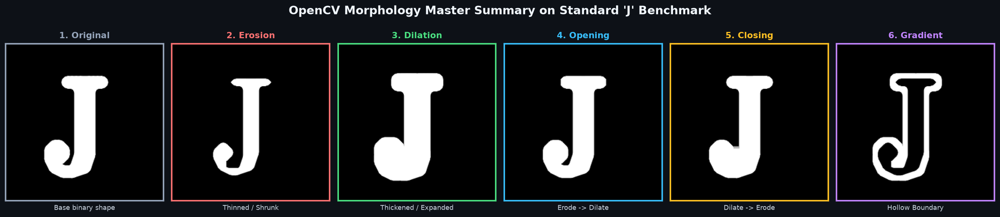

Master shape and structure transformations on binary masks: Structuring elements (RECT, ELLIPSE, CROSS), boundary shrinking via Erosion, gap bridging via Dilation, compound noise removal with Opening & Closing, and outline extraction via Morphological Gradient.
Topic 8 mein humne image ko binarize (0 aur 255) karna seekha. Lekin thresholding ke baad binary mask mein aksar do tarah ki problems aati hain:
In problems ko theek karne ke liye hum Morphological Operations use karte hain. Yeh geometric operations hote hain jo binary image ke Foreground (White Shapes) ke size aur structure ko modify karte hain.
THRESH_BINARY_INV) karna padega.
Morphological operations ek choti binary matrix (jise Structuring Element ya Kernel kehte hain) ke zariye perform hote hain. Yeh kernel sliding window ki tarah poori image par traverse karta hai.
OpenCV kernel generate karne ke liye cv2.getStructuringElement() provide karta hai:
import cv2
# 1. Rectangular Kernel (standard box)
kernel_rect = cv2.getStructuringElement(cv2.MORPH_RECT, (5, 5))
# 2. Elliptical / Circular Kernel (smooth organic boundaries)
kernel_ellipse = cv2.getStructuringElement(cv2.MORPH_ELLIPSE, (5, 5))
# 3. Cross-shaped Kernel (+ symbol, strict 4-connectivity)
kernel_cross = cv2.getStructuringElement(cv2.MORPH_CROSS, (5, 5))
cv2.erode() (Shrinking Foreground)Erosion ka kaam foreground (white regions) ke boundaries ko strip (erode) karna hai. Jaise samundar ki lehren pathar ko ghis deti hain, waise hi erosion white pixels ki kinariyon ko chota kar deta hai.
Rule: Output pixel sirf tab 255 banta hai jab kernel window ke niche aane wale sabhi pixels 255 hon. Agar ek bhi neighbor black 0 hai, to center pixel ko 0 bana diya jata hai!
import cv2
# Apply Erosion
# iterations: Number of times erosion is applied sequentially (default=1)
eroded_img = cv2.erode(binary_img, kernel=kernel_rect, iterations=1)Agar kernel bohot bada ho ya iterations zyada hon, to patli lines aur delicate text letters poori tarah dissolve ho sakte hain!
cv2.dilate() (Expanding Foreground)Dilation erosion ka theek ulta hota hai. Yeh foreground (white regions) ke boundaries ko chaaron taraf expand (mota) kar deta hai.
Rule: Output pixel 255 ban jata hai agar kernel window ke niche kam se kam ek pixel bhi 255 ho!
import cv2
# Apply Dilation
dilated_img = cv2.dilate(binary_img, kernel=kernel_rect, iterations=1)Zyada dilation pass-pass baithe alag-alag objects ko aapas mein chipka kar ek single blob bana deti hai!

cv2.MORPH_OPEN (Noise Removal)Agar aap sirf Erosion karte hain, to noise to chali jaati hai lekin main object bhi chota ho jata hai. Iska perfect solution hai Opening:
Yeh kaise kaam karta hai?
import cv2
# MorphologyEx syntax for Opening
k = cv2.getStructuringElement(cv2.MORPH_RECT, (5, 5))
cleaned_mask = cv2.morphologyEx(noisy_mask, cv2.MORPH_OPEN, kernel=k)cv2.MORPH_CLOSE (Gap & Hole Filling)Opening ka theek opposite Closing hota hai:
Yeh kaise kaam karta hai?
import cv2
# MorphologyEx syntax for Closing
k = cv2.getStructuringElement(cv2.MORPH_RECT, (7, 7))
healed_mask = cv2.morphologyEx(defective_mask, cv2.MORPH_CLOSE, kernel=k)
cv2.MORPH_GRADIENTMorphological Gradient ek solid binary shape me se uski Perimeter Boundary (Outline) nikaalne ka sabse aasan tareeka hai:
Kyunki Dilation object ki outer kinari ko expand karta hai aur Erosion inner core ko shrink karta hai, dono ka difference nikaalne par beech ka hollow border outline ban jata hai!
import cv2
# Morphological Gradient
k = cv2.getStructuringElement(cv2.MORPH_RECT, (5, 5))
outline = cv2.morphologyEx(solid_shape, cv2.MORPH_GRADIENT, kernel=k)
| Operation | Sequence | Primary Effect on White Foreground | Standard Use-Case |
|---|---|---|---|
| Erosion | Single step | Shrinks boundaries, removes tiny noise | Separating touching blood cells / coins. |
| Dilation | Single step | Expands boundaries, bridges cracks | Repairing faint handwritten text strokes. |
| Opening | Erode → Dilate | Removes isolated white noise dots | Cleaning thresholded background noise. |
| Closing | Dilate → Erode | Fills internal black holes & bridges gaps | Closing holes inside segmented object masks. |
| Gradient | Dilate − Erode | Extracts hollow perimeter outline | Fast boundary detection without heavy Sobel math. |

import cv2
# Load binary mask
mask = cv2.imread("binary_mask.png", cv2.IMREAD_GRAYSCALE)
# Create 5x5 rectangular structuring element
kernel = cv2.getStructuringElement(cv2.MORPH_RECT, (5, 5))
# Apply operations
eroded = cv2.erode(mask, kernel, iterations=1)
dilated = cv2.dilate(mask, kernel, iterations=1)
cv2.imwrite("eroded.png", eroded)
cv2.imwrite("dilated.png", dilated)import cv2
# Load binary image with background salt noise
noisy_img = cv2.imread("noisy_barcode.png", cv2.IMREAD_GRAYSCALE)
# 3x3 or 5x5 kernel depending on noise dot size
kernel = cv2.getStructuringElement(cv2.MORPH_RECT, (5, 5))
# Opening wipes out small specks while keeping barcode intact
cleaned_img = cv2.morphologyEx(noisy_img, cv2.MORPH_OPEN, kernel)
cv2.imwrite("cleaned_barcode.png", cleaned_img)import cv2
# Load binary mask with internal holes
broken_letters = cv2.imread("broken_ocr.png", cv2.IMREAD_GRAYSCALE)
# 7x7 kernel bridges hairline gaps
kernel = cv2.getStructuringElement(cv2.MORPH_RECT, (7, 7))
# Closing fills internal cracks seamlessly
repaired_img = cv2.morphologyEx(broken_letters, cv2.MORPH_CLOSE, kernel)
cv2.imwrite("repaired_ocr.png", repaired_img)import cv2
# Load solid binary silhouette
silhouette = cv2.imread("person_mask.png", cv2.IMREAD_GRAYSCALE)
# 3x3 kernel produces a sharp 2-pixel wide perimeter
kernel = cv2.getStructuringElement(cv2.MORPH_RECT, (3, 3))
# Morphological gradient extracts object outline
outline = cv2.morphologyEx(silhouette, cv2.MORPH_GRADIENT, kernel)
cv2.imwrite("outline_boundary.png", outline)255 ban sake: binary = cv2.bitwise_not(gray_thresh).
(9, 9) kernel se Opening laga di, to poora letter hi gayab ho jayega!cv2.getStructuringElement() se RECT, ELLIPSE, ya CROSS footprint mein generate hoti hai.Ab jab humne clean, noise-free binary masks banana seekh liya hai, agle topic mein hum seekhenge ki kaise cv2.findContours() se objects ke borders trace kiye jaate hain, bounding boxes draw kiye jaate hain, aur geometric shapes (circles, squares, polygons) detect kiye jaate hain!